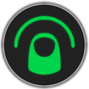
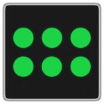
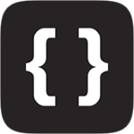
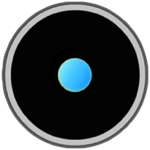

mhuusko5 |
Mathew Huusko V
Software and me.
I work full time developing software at Radeeus. I (mostly) sport the hat of iOS lead on a small, passionate team riding the line between music, technology, and social interaction. I'm thrilled to be surrounded by music lovers intent on making music listening an intimately shared experience again.
I also create software independently, without a special title (or desk usually). I'm the mad hatter, making and wearing all the hats, from invention and concept creation to experience and interface design to creation of visual assets to engineering. Much of my work is related to how people physically interface with software experiences.
I like talking about my work, and my vision. But not my "self".
Besides, I hear pictures are worth more.
Radeeus
| Listen to music with your friends, together in real time.

Gestr
| Launch apps and bookmarks on your Mac with multitouch trackpad drawings.

Tapr
| Rapidly switch and preview apps on your Mac with multitouch trackpad taps.
Gestr iOS
| Activate apps on your Jailbroken iOS device with multitouch drawings.

M5MultitouchSupport
| Sanely consume system wide multitouch events under Mac OS X.
M5DrawingRecognizer
| Easily store/match multistroke gestures in Objective-C.
Fleeting
| Spritz (speed read) any selectable text on your Jailbroken iOS device.
Knock
| Trigger Activator events by tapping on the sides of your Jailbroken iOS device.

Ione
| A fullscreen, Retina-enabled port of Sinuous for the Leap Motion platform.
Kemari
| A Zen inspired, non-competitive ball game for the Leap Motion platform.

Buzz Kill
| A retro arcade style mutant insect shooter for the Leap Motion platform.
iQueue
| First app I ever released (as "Social Jukebox," since unreleased), years ago.
Gestr
is...
a REVOLUTION in desktop multitasking
a step towards the natural desktop experience
Download for Mac OS X 10.7+
Gestr takes one of the things we do most on our Macs, launching/switching apps, and makes it both quick and personal. For the millions of Mac users with multitouch trackpads, it’s now possible to assign gestures/drawings that you create as the entry point to all of your apps.
With your gestures assigned, all it takes is a four finger tap (UPDATE: with quickdraw mode enabled, you can draw with three fingers together, no activation tap necessary!) to make your
trackpad your multitasking canvas! Download now to join the LOADING people who multitask differently. Or click to show a more expansive explanation.
Whether it be your on desk or lap, in your living room, or in front of your
futuristic float-screen,
you’re going to have to live with “desktop” (non-mobile) software for a long time. When you really want
to consume, or create, you should be immersed in the experience - something that’s seldom achieved
squinting at a four inch screen.
But then why is it that the four inch screens are getting
all the
innovation in interaction, with natural voice and gesture controlled interfaces, while the desktop
experience seems doomed to be ruled by cursors, keystrokes, and menus? Mobile software is becoming more
human. Desktop software should too.
Gestr is the first in a series of experiments embracing
that sentiment. Multitasking will no longer mean mousing over to Dock
icons, or enacting special key commands – just drawing what feels natural.
Don't like reading? Watch a demo/tutorial.
Fleeting
is...
the FASTEST way to read on your iDevice
a Spritz-like Action Menu plugin
Available on the Cydia Store for Jailbroken iOS 7
Fleeting is a tweak for Jailbroken iOS devices, specifically an Action Menu plugin, which lets you read any selectable text quickly and easily, one word at a time. This method of reading text is becoming commonly known as "Spritzing."
The difference between Fleeting and other Spritz-like implementations is you are not restricted to specific content, or to a specific reader app; any text you can select on your iOS device – web pages, news articles, Facebook posts, emails, etc. – you can read with Fleeting!
Watch the demo video for this new reading experience!
Gestr
is...
the COOLEST way to multitask on your iDevice
exactly like the original Gestr for Mac OS X
On Cydia for Jailbroken iOS 6+
Launch applications on your iDevice with multitouch gestures you define. Sound familiar? That's because you've seen this natural touch based multitasking experience before, on your Mac, with the original Gestr. Gestr for iOS is a direct port of my Mac OS X version.
Now you can multitask with custom multitouch gestures on your Macbook Pro, Macbook Air, Mac Pro or Mini with attached Magic Trackpad... iPhone, iPod Touch, and iPad!
Watch the demo video to your right to see Gestr in action on this new series of devices!
Ione
is...
simply IMPOSSIBLE to put down
a motion-controller obstacle avoidance game
Available on the Airspace Store
Ione (read "ion" or "Lone") was a weekend distraction - porting the already very fun game Sinuous
to the Leap Motion platform. Surprisingly it's made its way to the "Featured Games" section on the Leap
Motion Airspace Store. It turns out navigating a blue dot away from red dots with your finger is really
addictive. Who knew?
You should just go play it. But you can watch a demo if
you want.
TAPr
is...
kind of like Gestr's impatient cousin
the FASTEST way to multitask on your Mac
Download for Mac OS X 10.7+
Get to any of the nine applications you switch to most (give it a little time to learn!) on your Mac, with just two taps. A three finger tap on your trackpad to activate, and then a tap in the direction of the app you want to switch to, and you're there! Download now to join the LOADING
people who multitask that bit faster. Or click to show a more expansive explanation.
When I was creating Gestr I hoped that by the end, I would never have to go into my
applications
folder, or the Dock again. That and more came true. Now in about all of my day’s computer activities, I
never touch an application icon, a web bookmark, or type a url - I have a simple trackpad gesture
assigned to everything.
But what if even simple gestures are overkill? What if you
only use, on
average, a handful of applications? What would be the simplest way, in the natural desktop mindset of
being either touch or voice based, to get to those applications? I think it’s a tap.
While running, Tapr keeps track locally of your
application usage and
figures out which nine you go to the most. At any time, you can do a three finger tap on your trackpad to
activate Tapr, which in hand shows those applications on screen in a dial formation. That dial corresponds to
your trackpad, so tap on your trackpad where that application is on screen and you will instantly switch
to it. It’s as fast and simple as application switching can get.
Watch the demo below - it's as quick as Tapr.
Kemari
is...
CALMLY played with mouse or Leap Motion
based on an ancient Japanese ball game
Available on the Google Chrome Web Store
Kemari was a ball game that gained popularity in the 13th century Asuka period in Japan. My Kemari
wasn’t hundreds of years in the making (only a couple weeks), but it still holds similarities. It’s
non-competitive - there is no winning or losing, or high scores. Playing Kemari is about relaxing
and focusing for 60 seconds to maintain the balance of as many balls in the air as you can. You can play
with your mouse, or if you’re progressive enough to have one, your Leap Motion controller.
Take a look below to watch me do my best at Kemari.